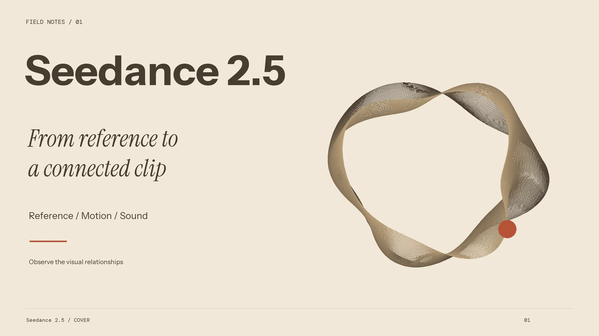
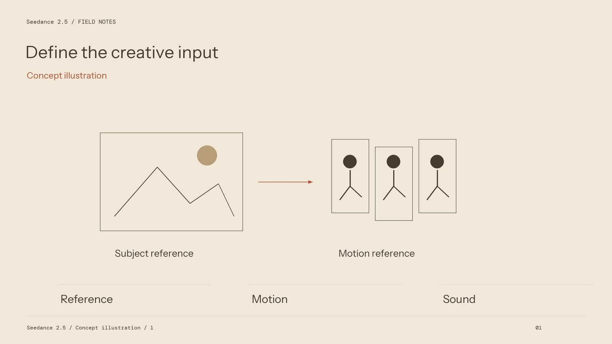
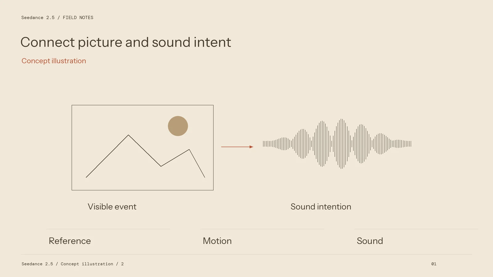

Seedance 2.5: Turn the Model Update into a Production Brief

The useful question after a model update is which part of a real project deserves a trial. For Seedance 2.5, begin with the creative task, the reference material, and the result an editor must deliver. An attractive demonstration does not replace a specification for the particular shot you need.
ByteDance Seed describes Seedance 2.5 as an audio-video generation model with reference and editing capabilities. That establishes a direction for evaluation: connected visual action, useful reference interpretation, and revisions that preserve the intended scene. The practical work starts by translating those ideas into observable requirements.
Separate the brief from the settings
Write down the subject, setting, action, camera movement, and sound intention before opening the generator. A product turning on a tabletop is different from a camera moving around a stationary product. A performer walking towards the lens is different from the camera tracking backwards. Make those relationships explicit.
Then identify which supplied asset carries each instruction. A product photograph defines visible structure. A scene reference suggests atmosphere. A motion reference can express performance or camera language. Avoid assigning contradictory roles to the same material, such as asking an image to preserve its composition while also demanding a completely different viewpoint.

Only after the brief is clear should you select the available generation mode and output settings. Check the exact model name shown in the workspace. A feature on another model card, a separate tool, or a different access route is not automatically part of the selected task.
Choose a shot that exposes the difficult requirement
A trial should answer a question. For a reflective appliance, observe whether the silhouette remains recognisable while highlights move. For a character scene, watch the face, clothing, and action through the entire clip. For a transparent object, inspect the boundary between the object and its background.
Keep the trial simple enough to interpret. One subject, one main action, and one clear camera instruction create a useful starting point. If the result fails, that simplicity helps distinguish an input problem from a movement problem. Adding more visual effects at this stage can hide the issue rather than resolve it.
Preserve the submitted references and prompt with the resulting file. Note the chosen mode and settings, including any choices that are inherited from the source material. This record makes a later comparison more meaningful than trying to reconstruct the successful attempt from memory.

Review the audiovisual result as a complete event
Watch the result at normal playback speed before stepping through individual frames. Look for changes in identity, contact, direction, and the continuity of the environment. A clean opening frame does not establish that the final frame is usable. Inspect the transition into and out of the main action as carefully as its most dramatic moment.
When sound is part of the selected workflow, review its relationship to visible events. A convincing visual gesture may still require a different sound cue, a shorter pause, or additional editing. Keep precise titles, packaging text, and other essential brand graphics available as separate finishing assets.
Make a revision useful to the next attempt
Change one meaningful element at a time: the reference, the description of the action, or the camera instruction. Record why the previous take was rejected and what the next attempt is meant to address. Several unexplained retries provide less production knowledge than a smaller set of traceable decisions.
The outcome of a good trial is not necessarily a final commercial shot. It may be a decision to simplify the scene, split it into an edit, or retain a captured element. Evaluate Seedance 2.5 by how the selected workflow supports that decision and the complete delivery brief.